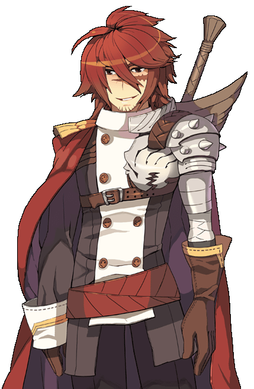
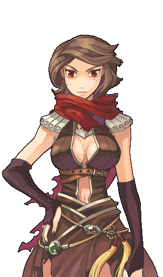
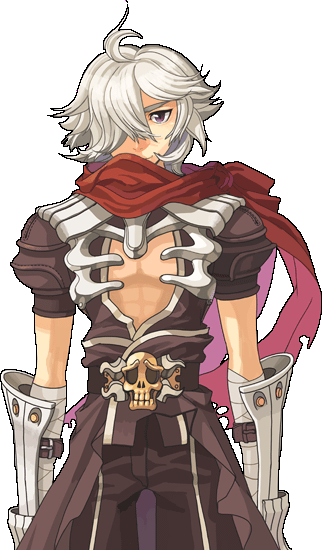
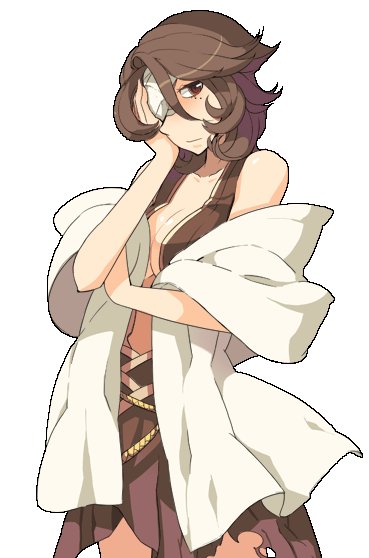
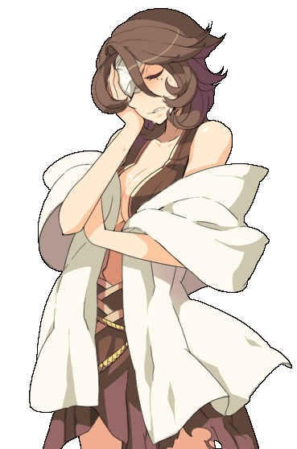

画像にリンクがはってあるものは、クリックすると別窓で大きめサイズが表示されます。
|  |
| ep13_captin_edq.bmp ヒバ・アジフ |
|  | |
リーン （ダンデリオン1部時） | キド （連合軍駐屯地） |

| |
キド （連合軍駐屯地） | キド （連合軍駐屯地） |
|  | |
キド （連合軍駐屯地） | キド （連合軍駐屯地） |
|  | |
リーン （モロク秘密の酒場奥） | リーン （モロク秘密の酒場奥） |
|  | |
リーン （モロク秘密の酒場奥） | リーン （モロク秘密の酒場奥） |
back
(c) Gravity Co., Ltd. & Lee MyoungJin(studio DTDS). All rights reserved.
(c) GungHo Online Entertainment, Inc. All Rights Reserved.
当コンテンツの再利用（再転載・配布など）は、禁止しています。